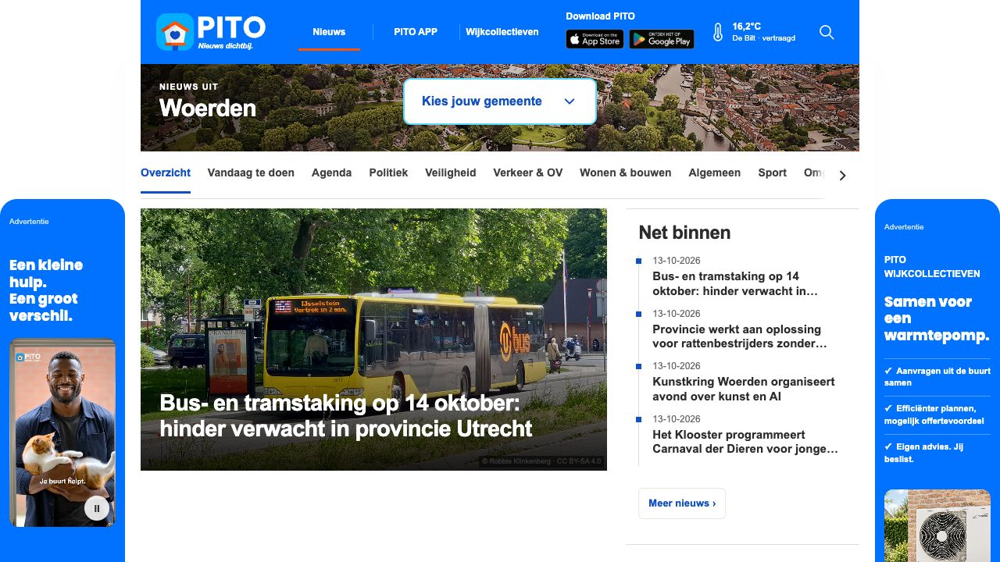
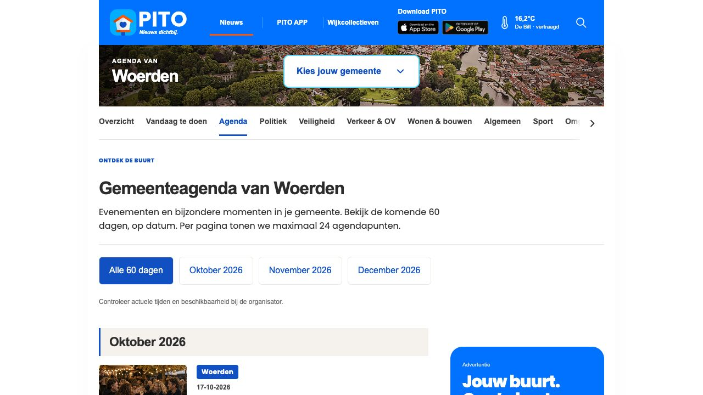
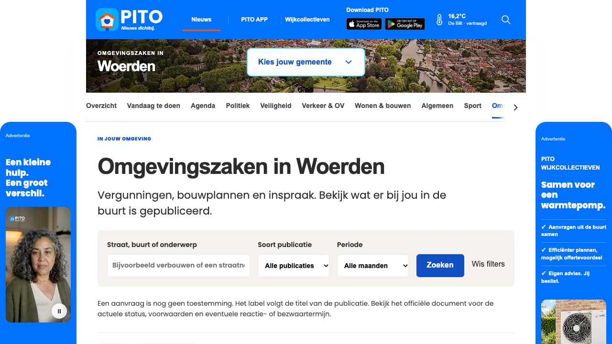
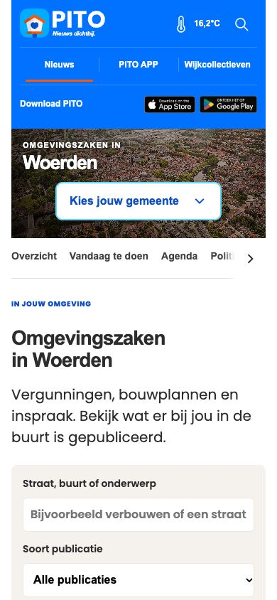

Beoordeling van de lokale preview · 14 oktober 2026
Een herkenbare basis, maar volledigheid en dagelijkse bruikbaarheid moeten nu vóór extra decoratie komen. PITO kan de centrale ingang voor de buurt worden; officiële gemeentelijke transacties, besluiten en persoonlijke gegevens blijven bij de bevoegde organisatie.
De gemeente is direct herkenbaar en het hoofdfoto-blok werkt. Het eerste scherm wordt gedomineerd door nieuws en twee advertenties. Voor het lokale suffertje moeten activiteiten, buurtverenigingen en praktische diensten eerder als volwaardige ingangen zichtbaar zijn. Advies: behoud de nieuwsopening, maar voeg een compacte verwijzing naar lokaal meedoen toe. De kleine fotocredit vraagt een afzonderlijke contrast- en leesbaarheidscontrole.

Agenda is actief en de maandkeuze is duidelijk. De eerste afspraak begint pas rond de onderkant van het scherm. Kort de introductie in, verklein de verticale ruimte en houd de maandkeuze compact. Gebruik daarnaast een duidelijke mogelijkheid voor verenigingen om een evenement aan te leveren. Dit is een aanbeveling; een inzendstroom is hier niet getest.

De zoekvelden zijn begrijpelijk. Maar dubbele plaats-/onderwerpvermelding, een grote intro, filters en uitleg gaan aan de eerste bekendmaking vooraf. Maak een compactere kop en toon de filters als korte zoekregel. Geef elk besluit dezelfde tekstbadge als op de detailpagina. De statusverbetering is in deze beurt uitgevoerd; dit screenshot toont de uitgangssituatie.

Bij 390 px is geen horizontale pagina-overloop gemeten. De header, gemeentebalk en inleiding nemen samen zoveel hoogte in dat zelfs de filters niet volledig op het eerste scherm passen. Prioriteit: compactere mobiele header en optioneel uitklapbare filters. Kleur alleen is onvoldoende: behoud altijd het statuswoord. Volledige toetsenbord- en schermlezertests zijn nog nodig.

Nuttige adressen staat nu onderaan de homepage. Voor 1.129 bekendmakingen met een algemene status is de officiële inhoud opgehaald; 1.103 waren bereikbaar en 26 niet. Samen met bestaande broninhoud zijn 444 labels specifieker geworden, waarvan 66 in oktober. Niet eenduidige besluiten blijven neutraal; een algemeen besluit is geen bewijs van verlening. De kleuren zijn ook op detailpagina’s gecontroleerd.
Vier schermen bekeken in de lokale preview, met een mobiele controle op 390 px. Dit is geen volledige audit van alle 26 gemeenten, browsers, inhoudelijke bronnen, snelheid, juridische teksten of toegankelijkheid. Datadekking is aanvullend gecontroleerd in de lokale dataset. De voorgestelde vervolgstappen zijn nog niet allemaal gebouwd.